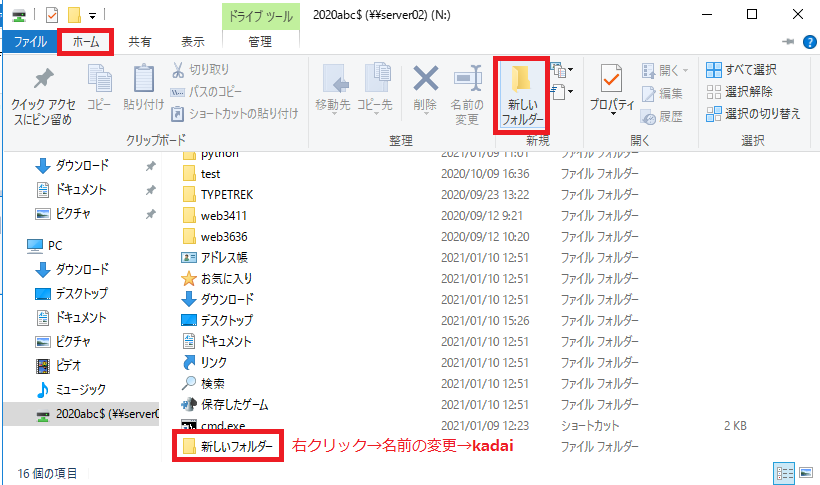
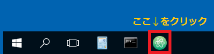
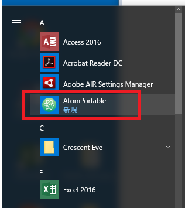
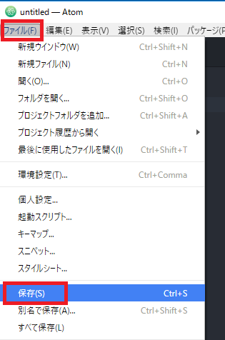
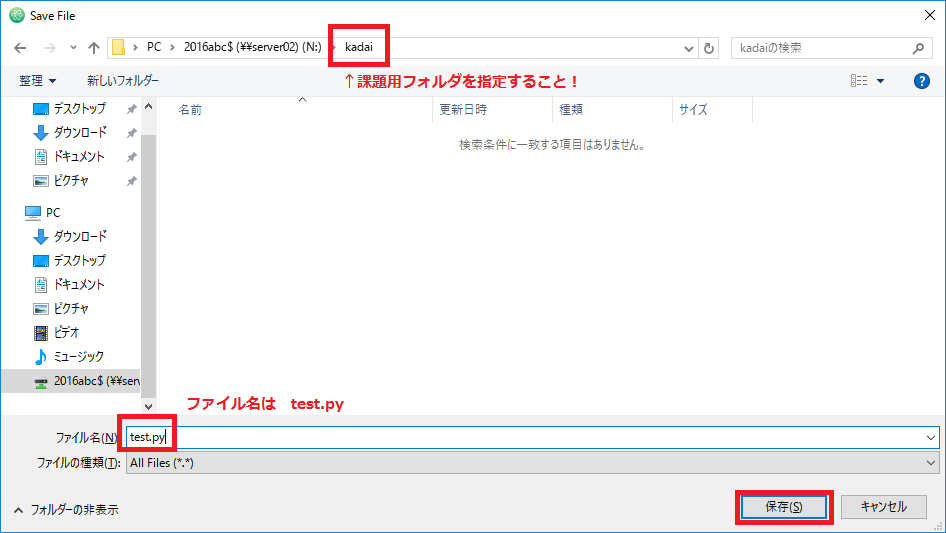
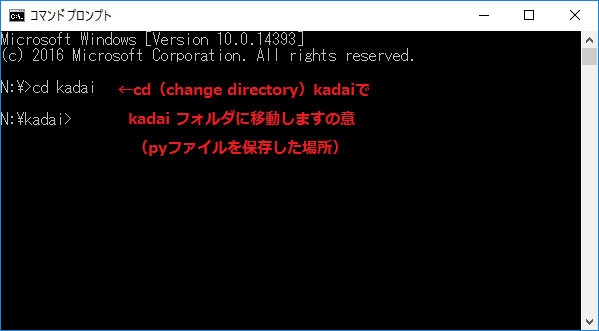
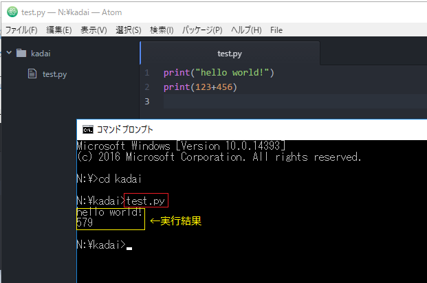

対話モードではちょっと試すときにはよいのですが、いちいちプログラムを書く必要があるので、たくさん指示があるときには面倒です。
課題ではあらかじめプログラムを入力したものをファイルとして保存し、実行していきます。
プログラムを保存する場所を作成します。今後すべてのプログラムファイルは同じ場所に保存してください。
プログラム文は指定のフォルダに必ず保存します。フォルダを作成しましょう。
デスクトップのPCアイコンから自分のネットワークドライブを開きます。フォルダを新規で作成し、kadaiと名前をつけます。
▼PCアイコンをダブルクリックし、ネットワークの場所を開く。「ホーム」タブ→「新しいフォルダー」をクリック、kadaiと名前を変更する。

Pythonはインタプリタ型スクリプト言語（コンパイルを必要としない）ので、メモ帳などのごく普通のテキストエディタで記述することができますが、プログラムを記述するためのエディタを使ったほうが便利です。Atomも人気のある無料エディタのひとつです。
先ほどピン留めしたタスクバーのアイコン（またはスタートボタン→プログラム一覧→
Atomportableを選択します。
▼タスクバーのAtomアイコンをクリック、しばらく待ちます。

▼タスクバーになければスタートボタンのAtomportableをクリック、しばらく待ちます。

▼起動したら、次の二行を入力してください。すべて半角文字で入力しましょう。
▼書けたら、[ファイル]メニューから保存します。

保存場所は課題用フォルダkadaiです。ファイル名はtest.pyとします。Pythonの文法に従って色分けされます。

保存したプログラムをコマンドプロンプト上で実行します。cd(change directory)コマンドで実行場所を移動します。
▼コマンドプロンプトを起動し cd kadai と入力。カレントディレクトリ（現在の作業場所）をkadaiフォルダに変更します。

▼あとは保存したファイル名testと入力、Enterキーを押します。すると実行結果が出力されます。

プログラム文を書いて、保存し、実行するまでの流れがつかめればOKです。
＊プログラム文の作成・編集・保存する→エディタ（編集用ソフト）を使用する。
＊パイソンファイルのファイル名には拡張子.pyをつける。
＊プログラムを実行するには実行環境が必要（Windowsではコマンドプロンプト）
＊パイソンファイルの実行は、アイコンをダブルクリックするのではなく、正しい実行位置でのコマンド入力が必要。
＊パイソンファイルの保存先は場所を決めて、同じフォルダ内に保存していく。